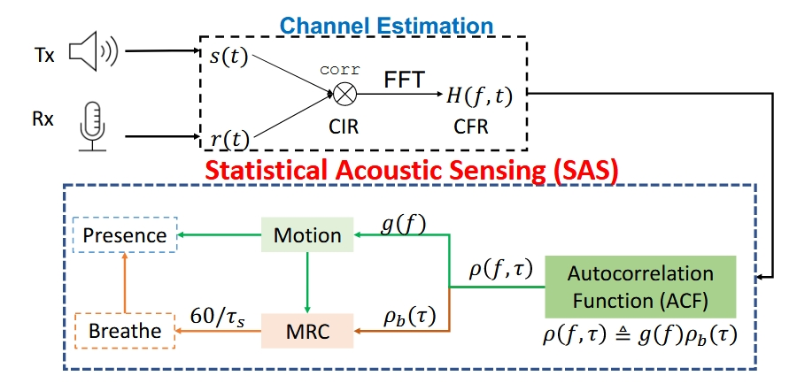
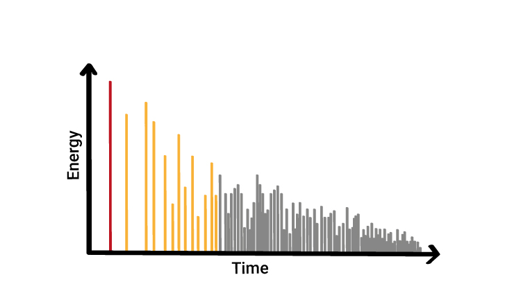

Physical AI & Sensing For Human

OctoNet: A Large-Scale Multi-Modal Dataset for Human Activity Understanding Grounded in Motion-Captured 3D Pose Labels
NeurIPS 2025 D&B

Statistical Acoustic Sensing For Real-Time Respiration Monitoring and Presence Detection
MobiSys 2024 (Demo/Poster/Workshop)
Room Acoustics Modelling

Temporal Modeling of Room Impulse Response Generation via Multi-Scale Autoregressive Learning
Interspeech 2025